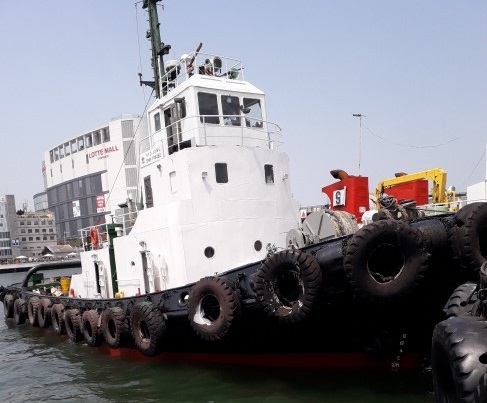

2,600 BHP 194 GRT Harbor Tug Blt 1979 Kr
/ informed by BLUE MARINE CO., LTD.
(18-482)

- BUILT
:
1979-09-01 HUNDAI INDUSTRY, KOREA
- FLAG/CLASS
KOREA / KST, COASTAL
- L/B/D
:
28.80 X 8.60 X 3.80m
- GRT
:
194.95T
- MAIN ENGINE
:
NIIGATA 25BX, 1300ps X 2set (TTL. 2600ps)
- PROPELLER
:
NIIGATA Z-PELLER
- COMPLEMENT : 7 P
- LOCATION
:
KOREA
Information History